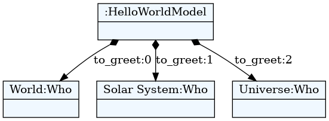

textX
Prof. dr Igor Dejanović (igord at uns ac rs)
Kreirano 2019-12-05 Thu 20:32, pritisni ESC za mapu, m za meni, Ctrl+Shift+F za pretragu
Sadržaj
1 Osnovne osobine
- 100% Python kod
- MIT licenca
- Istovremeno definisanje gramatike i meta-modela - inspirisan sa Xtext
- Automatska konstrukcija modela - podrška za razrešavane referenci
- Podrška za veze tipa celina-deo
- Kontrola parsiranja (whitespaces, case, keywords…)
- Postprocesiranje objekata modela ili celog modela
- Modularizacija gramatika - import
- Vizualizacija modela i meta-modela
- Dokumentacija i tutorijali dostupni na https://textx.github.io/textX/
2 Arhitektura

3 Instalacija
3.1 Instalacija
- Sa PyPI
$ mkdir ntp $ cd ntp $ python -m venv venv $ source venv/bin/activate $ pip install textX Looking in indexes: https://pypi.python.org/simple/ Collecting textX Using cached https://files.pythonhosted.org/packages/ff/df/33442dfb9ddfc2a9a84d60915ccf0602a5b04fdc46f523a7e939e588cd59/textX-1.8.0-py2.py3-none-any.whl Collecting Arpeggio>=1.9.0 (from textX) Using cached https://files.pythonhosted.org/packages/ec/5c/9cccf42a59406476f81993158376947a1487e3fcd84c01914c1ad17e54e1/Arpeggio-1.9.0-py2.py3-none-any.whl Installing collected packages: Arpeggio, textX Successfully installed Arpeggio-1.9.0 textX-1.8.0
3.2 Instalacija razvojne verzije
$ mkdir ntp
$ cd ntp
$ python -m venv venv
$ source venv/bin/activate
$ pip install https://github.com/textX/textX/archive/master.zip 1 ↵
Looking in indexes: https://pypi.python.org/simple/
Collecting https://github.com/textX/textX/archive/master.zip
Downloading https://github.com/textX/textX/archive/master.zip
/ 6.3MB 6.0MB/s
Collecting Arpeggio>=1.9.0 (from textX==1.8.0)
Using cached https://files.pythonhosted.org/packages/ec/5c/9cccf42a59406476f81993158376947a1487e3fcd84c01914c1ad17e54e1/Arpeggio-1.9.0-py2.py3-none-any.whl
Collecting click==7.0 (from textX==1.8.0)
Using cached https://files.pythonhosted.org/packages/fa/37/45185cb5abbc30d7257104c434fe0b07e5a195a6847506c074527aa599ec/Click-7.0-py2.py3-none-any.whl
Installing collected packages: Arpeggio, click, textX
Running setup.py install for textX ... done
Successfully installed Arpeggio-1.9.0 click-7.0 textX-1.8.0
3.3 Instalacija za razvoj
$ mkdir ntp
$ cd ntp
$ python -m venv venv
$ source venv/bin/activate
$ git clone git@github.com:textX/textX.git
Cloning into 'textX'...
Enter passphrase for key '/home/igor/.ssh/id_rsa':
remote: Enumerating objects: 65, done.
remote: Counting objects: 100% (65/65), done.
remote: Compressing objects: 100% (56/56), done.
remote: Total 7649 (delta 23), reused 32 (delta 9), pack-reused 7584
Receiving objects: 100% (7649/7649), 9.20 MiB | 2.21 MiB/s, done.
Resolving deltas: 100% (4657/4657), done.
$ pip install -e textX
Looking in indexes: https://pypi.python.org/simple/
Obtaining file:///home/igor/ntp/textX
Requirement already satisfied: Arpeggio>=1.9.0 in ./venv/lib/python3.7/site-packages (from textX==1.8.0) (1.9.0)
Requirement already satisfied: click==7.0 in ./venv/lib/python3.7/site-packages (from textX==1.8.0) (7.0)
Installing collected packages: textX
Found existing installation: textX 1.8.0
Uninstalling textX-1.8.0:
Successfully uninstalled textX-1.8.0
Running setup.py develop for textX
Successfully installed textX
4 Upotreba
4.1 Gramatika = meta-model + konkretna sintaksa
HelloWorldModel:
'hello' to_greet+=Who[',']
;
Who:
name = /[^,]*/
;
from textx import metamodel_from_file
hello_meta = metamodel_from_file('hello.tx')
4.2 Model = program
hello World, Solar System, Universe

4.3 Parsiranje - instanciranje modela
example_hello_model = hello_meta.model_from_file('example.hello')

- Model je graf Python objekata čija struktura je u skladu sa gramatikom (npr.
HelloWorldModelobjekat sadrži Python listuto_greet). - Model možemo dalje interpretirati, analizirati, generisati kod…
4.4 Provera i vizualizacija meta-modela
- textX će pri parsiraju gramatike prijaviti sintaksne greške.
Ako želimo možemo proveriti gramatiku u toku razvoja:
textx check hello.tx/home/igor/repos/igordejanovic.github.io/courses/tech/textX/hello.tx: OK.
U slučaju greške biće prijavljena tačna lokacija.
Error in meta-model file. Expected 'abstract_rule_ref' at position (6, 9) => ': name |*= /[^,]*/ '.
ili vizualizovati
textx list-generatorsany -> dot textX Generating dot visualizations from arbitrary models textX -> dot textX Generating dot visualizations from textX grammars textX -> PlantUML textX Generating PlantUML visualizations from textX grammars
textx generate hello.tx --target dotGenerating dot target from models: /home/igor/repos/igordejanovic.github.io/courses/tech/textX/hello.tx -> /home/igor/repos/igordejanovic.github.io/courses/tech/textX/hello.dot To convert to png run "dot -Tpng -O hello.dot"
4.5 Robot primer
fajl robot.tx
Program:
'begin'
commands*=Command
'end'
;
Command:
InitialCommand | MoveCommand
;
InitialCommand:
'initial' x=INT ',' y=INT
;
MoveCommand:
direction=Direction (steps=INT)?
;
Direction:
"up"|"down"|"left"|"right"
;
Comment:
/\/\/.*$/
;
fajl program.rbt
begin
initial 3, 1
up 4
left 9
down
right 1
end
4.6 Instanciranje meta-modela
from textx import metamodel_from_file
robot_mm = metamodel_from_file('robot.tx')

textx generate robot.tx --target dot
dot -Tpng -O robot.dot
4.7 Parsiranje i instanciranje modela
robot_model = robot_mm.model_from_file('program.rbt')
begin
initial 3, 1
up 4
left 9
down
right 1
end

textx generate program.rbt --grammar robot.tx --target dot
dot -Tpng -O program.dot
4.8 Šta raditi sa modelom?
- Interpretiranje
- Generisanje koda
- Razne vrste analize i transformacije
4.9 Interpretiranje Robot modela
class Robot(object):
def __init__(self):
# Initial position is (0,0)
self.x = 0
self.y = 0
def __str__(self):
return "Robot position is {}, {}.".format(self.x, self.y)
4.10 Interpretiranje Robot modela
def interpret(self, model):
# model is an instance of Program
for c in model.commands:
if c.__class__.__name__ == "InitialCommand":
print("Setting position to: {}, {}".format(c.x, c.y))
self.x = c.x
self.y = c.y
else:
dir = c.direction
print("Going {} for {} step(s).".format(dir, c.steps))
move = {
"up": (0, 1),
"down": (0, -1),
"left": (-1, 0),
"right": (1, 0)
}[dir]
# Calculate new robot position
self.x += c.steps * move[0]
self.y += c.steps * move[1]
4.11 Interpretacija Robot modela
robot = Robot()
robot.interpret(robot_model)
begin
initial 3, 1
up 4
left 9
down
right 1
end
Setting position to: 3, 1 Robot position is 3, 1. Going up for 4 step(s). Robot position is 3, 5. Going left for 9 step(s). Robot position is -6, 5. Going down for 0 step(s). Robot position is -6, 5. Going right for 1 step(s). Robot position is -5, 5.
Problem: Ako ne zadamo korak podrazumevano je 0 (textX definiše default vrednosti za bazične tipove).
4.12 Object processor
def move_command_processor(move_cmd):
"""
This is object processor for MoveCommand instances.
It implements a default step of 1 in case not given
in the program.
"""
if move_cmd.steps == 0:
move_cmd.steps = 1
MoveCommand:
direction=Direction (steps=INT)?
;
Registracija procesora na meta-modelu:
# Register object processor for MoveCommand
robot_mm.register_obj_processors({'MoveCommand': move_command_processor})
Sada se robot ponaša ispravno.
Setting position to: 3, 1 Robot position is 3, 1. Going up for 4 step(s). Robot position is 3, 5. Going left for 9 step(s). Robot position is -6, 5. Going down for 1 step(s). Robot position is -6, 4. Going right for 1 step(s). Robot position is -5, 4.
5 Primeri
5.1 Generisanje koda - Entity primer
- Referenciranje drugih objekata.
- Upotreba obrađivača šablona (Template Engines) za generisanje koda.
- http://textx.github.io/textX/stable/tutorials/entity/
5.2 State Machine
- Video tutorial
- http://textx.github.io/textX/stable/tutorials/state_machine/
5.3 Izrada mini kompajlera - ppci
6 Napredne tehnike - pyFlies
7 Podrška u editorima
- Visual Studio Code (IntelliSense, Outline, Code highlighting)
- Tekući razvoj - Language Server Protocol
- Mod za Emacs
- Ninja IDE